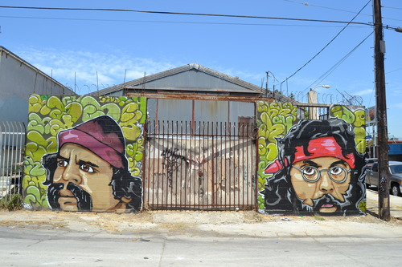

Art Appreciation in an Alley
By Mario Gonzalez
Alleys, places decent people avoid, synonymous with the dumping of trash and bodies in the middle of the night, dark places where unsavory characters roam committing unspeakable acts; those places people never see from the street.
Who walks in alleys? I do, but only during the day. Alleys experience a metamorphosis during the day so, for no other reason than that, I recently decided to take a walk in the alley behind 5300 Alhambra Road. What I discovered was a trash strewn artery that was bustling with open businesses and workers going about their jobs, clients coming and going from the medical marijuana dispensary, men quickly glancing up and down the alley before entering the establishment that offers foot massages and something you might not expect to experience in an alley.
Walls once blanketed with graffiti were now transformed into an artist canvas with murals painted in vibrant colors mesmerizing the observer. I saw murals worthy of display in a renowned gallery, the meaning within each work unknowable at first glance, but obtainable to those who take the time to sit and discover the subliminal meaning etched within the façade.
As I walked the alley admiring my discovery of urban art, I felt as if I was strolling in an exclusive gallery; admiring paintings by up and coming artist with a visionary flare for expressing their innermost emotions to the observer.
As opposed to viewing these works in a sterile gallery environment, the accompanying debris and trash propped up against the murals is urbanology to its core, taking the viewer into another threshold of art appreciation.
This observer was immediately enthralled by each mural. Start anywhere in the alley and walk in any direction you want, for that is part of the awe. You will see murals of Cheech and Chong, a bizarre desert scene complete with vultures and cow skulls, a nude winged Latina, a mural depicting a red devil atop a hellhound train transporting military tanks, a native on all fours preparing for an attack, a Chevy low-rider, a voluptuous tattooed Marilyn Monroe, a mural depicting social injustice, a requiem for “Big Weecho” and many more unique works of art.
Pack a folding chair, take a spread of wine, cheese and a baguette, set up in front of any visionary masterpiece and experience art appreciation in an alley; you will not be disappointed.